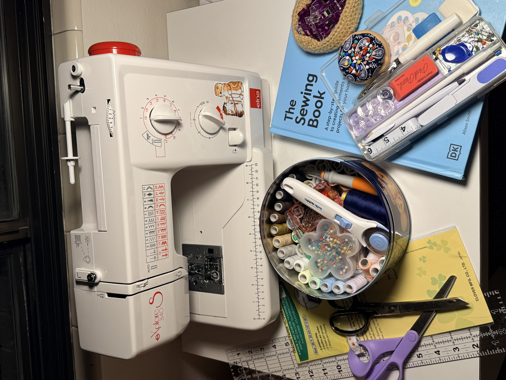

- The supplies you will be needing for your first day sewing:
- 18x3 Ruler
- Shears
- Tailor's Chalk
- Measuring Tape
- Seam Ripper
- Pins
- Pin Cushion
- Sewing Gauge
- Choice of Fabrics
- Snips
-
Extra supplies you will be needing in the future
- Needles for hand sewing and machine needles
- Iron and Iron board
- Taylor's Ham
- Sewing clips
- Variety of threads
- Pins
- Extra bobbins
- Buttons
- Tracing Papers
- Rotary Cutter